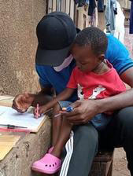
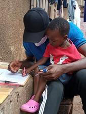

The first KidsRead "Little Library" premiered on August 4, 2019 with the sole purpose of providing books to the under-served children in Uganda. They are encouraged to take a book, read it and return it for another book. There are 150 books or more in each library. They range from picture books for the very young, story books, some early tutorials and work books. We purchase books from local publishers and use local artisans to build and paint our libraries. These will return after the end of the pandemic.

Free education is limited in Uganda due to the large number of children. Our mission is to provide books to the under-served children around Kampala. We aim to help them learn, grow and experience a world to which they might not otherwise be exposed. We now introduce CLIP (Children Learning Independently Program) which will provide educational workbooks directly to the children. This will help them begin to reach for their potential as good citizens and productive individuals for their communities and them selves.

Our first year as an organization we opened 5 of our 12 libraries to the communities of Kabalagala, Kibuli, Katwe, Nsambya and Kosovo. We have all 12 libraries built and ready to dedicate however, the pandemic has prevented us from doing so. We shifted our focus to providing food to all five cities, giving out 20,500 meals to our children and their families during June & July of 2020. We began the CLIP program which give children at home learning opportunities. 1. Libraries 2. Food 3. CLIP at home learning
 
